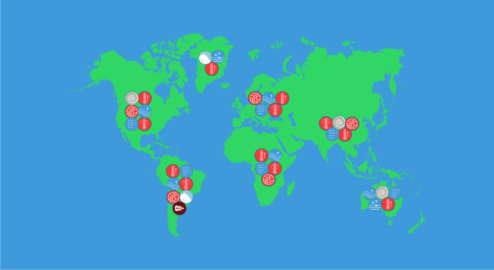

"La richesse de ce monde est tout autour de nous et pas uniquement sous nos pieds !" Grace sur Pandora en 2154 (Avatar)
Gogo, que va-t-il se passer si on continue à émettre trop de gaz à effet de serre ?
Prévisions des impacts sur l'environnement liées au dérèglement climatique
D’ici 2100 la fonte des glaces (calottes glaciaires, banquise, pergélisol) va induire une hausse moyenne du niveau marin de presque un mètre et de trois mètres d’ici 2030. Cette hausse provoquera des inondations allant jusqu’à la disparation d’îles et accentuera l’érosion des côtes.
Le réchauffement des océans induira une acidification de ces environnements et modifiera radicalement ces écosystèmes. La conséquence sera une disparition de nombreuses espèces marines comme les coraux. La biodiversité terrestre sera également victime de l’augmentation de la température moyenne de notre planète.
Le dérèglement climatique occasionnera des évènements météorologiques extrêmes comme des cyclones mais aussi des sécheresses. Ce dernier phénomène engendra des incendies, des famines, la réduction de la quantité d’eau douce disponible dans les nappes phréatiques ou encore l’augmentation de maladies comme le paludisme ou la dengue.
Prévisions des principaux risques par zone géographique

L’homme sera la première victime de son activité passé et présente. Le réchauffement climatique impactera une multitude domaine comme l’agriculture et la santé. On peut s’attendre au décuplement des réfugiés climatiques et de la pauvreté. Finalement on peut craindre un futur où les inégalités et les guerres seront omniprésentes.